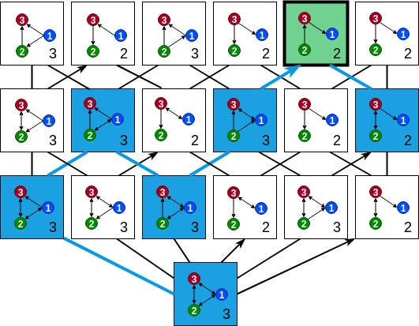

|
I am currently a Master's student at MIT. I work in the MIT Institute for Data, Systems, and Society (IDSS) with Professor Caroline Uhler. My current research is in causal inference and statistics. I graduated from MIT with a B.S. in Computer Science and Electrical Engineering with a minor in Mathematics. Previously, I worked in the MIT Computational Cognitive Science Lab with Professors Josh Tenenbaum and Ilker Yildirim, and the Laboratory for Information and Decision Systems (LIDS) with Professor Bob Berwick. |

|
Teaching
|
Research |
Ongoing Projects |
|  |
with Daniel Bernstein, Chandler Squires, and Caroline Uhler We're developing a provably consistent score-based algorithm for causal discovery in the presence of latent confounders: given observed data from a mixed graph (representing a causal graph with latent confounders), the algorithm maps to every poset the mixed graph that is most representative of the data among the ones compatible with the poset, and greedily searches over the more constrained space of posets to find a graph that is Markov equivalent to the generating graph. |
|
with Snigdha Panigrahi and Caroline Uhler We provide theoretical guarantees on what can be learned from data generated from a mixture of DAGs, with limited knowledge about the mixture components the mixture proportions. We investigate what can be said about the components of the mixture and the membership of the data-points. |
Completed Work |
|
Daniel Bernstein*, Basil Saeed*, Chandler Squires*, and Caroline Uhler
We show that learning a causal graph in the presence of latent variables (represented by mixed graphs),
can be cast as an optimization problem over the space of partial orderings of the set of observed variables.
We prove under assumptions weaker than faithfulness of the distribution to a mixed graph that any sparsest
independence map (IMAP) of the distribution belongs to the Markov equivalence class of
the true model. This motivates the Sparsest Poset formulation - that posets can be mapped
to minimal IMAPs of the true model such that the sparsest of these IMAPs is Markov
equivalent to the true model.
|
|
|
Basil Saeed, Anastasiya Belyaeva, Yuhao Wang, Caroline Uhler Preprint, 2019 We develop a provably consistent procedure for learning a causal graph in the
presence of measurement error for a wide class of measurement noise models when the
noise-less variables are Gaussian.
We prove asymptotic consistency, discuss finite-sample considerations and demonstrate
our method's performance on simulated and real data to recover the underlying gene
regulatory network from zero-inflated single-cell RNA-seq data.
|
|

|
Ilker Yildirim*, Basil Saeed*, Grace Bennett-Pierre, Tobias Gerstenberg, Joshua Tenenbaum, Hyowon Gweon We give a computational account of how humans judge the difficulty of a range of physical construction tasks
(e.g., moving 10 loose blocks from their initial configuration to their target configuration, such as a vertical tower)
by quantifying two key factors that influence construction difficulty: physical effort and physical risk.
|
|
Ilker Yildirim*, Tobias Gerstenberg*, Basil Saeed, Marc Toussaint, Josh Tenenbaum We develop a model that plans over a symbolic representation of an object manipulation task, executes the plan using a geometric solver, and checks the plan's feasibility by taking into account the physical constraints of the scene, in an attempt to explain participants' actions and mental simulations when encountering such a task.
|
* indicates equal contribution.
|
|